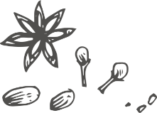
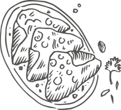
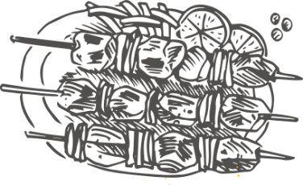
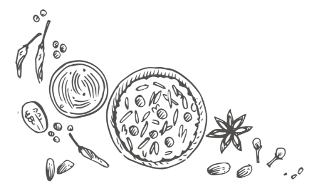

どこに行けば良いかわからない人にオススメ
こんな方のためのサービスです
辛さを調節できる店舗がほとんどです。ぜひ勇気を出して行ってみてください
私も最初はそうでした。一度行ってみれば気にならなくなりますし、意外とたくさん人が来ていることに驚くと思います。それだけで行かないなんてもったいない！！
そんな方の背中を押すために、このサービスを作りました。意外とたくさんお店があるので、近くのお店に行ってみてくださいね。

“できたてのナン”の美味しさに感動して、なんでもっと早くいかなかったんだろう
私みたいに食わず嫌いをしている方もきっといるはず
そんな想いから作ったサービスです。